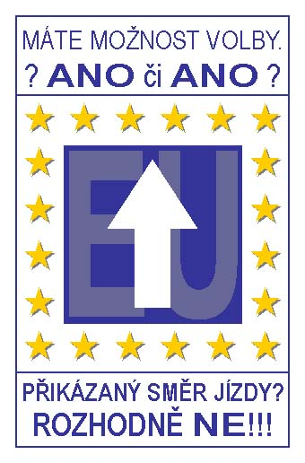

|  |
Dlouhá
léta nevíme o EU vůbec nic.
A najednou ("čirou náhodou" zrovna půl roku před referendem o
našem vstupu) je všude kolem nás plno pozitivních plakátu,
pochvalných článků, šťastných obrázků, vstřícných úsměvu,
slibů a všech dalších propagandistických lží. Copak se tam mají opravdu tak
dobře? A my se budeme mít ještě líp, až místo koruny bude tEURO?
Nepřísluší nám hodnotit, když nic nevíme. Neříkáme NE Evropské unii.
Říkáme NE tomu svinstvu, kterým nás za NAŠE peníze krmí NAŠE
drahá vláda.
KRVIK TOTR
Souhlasíš? Pošli dál.
Nesouhlasíš? Zařaď se! |